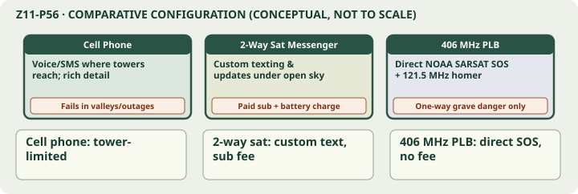

Z11-P56 · Navigation, weather and rescue · New manuscript
Compare cell phones, two-way satellite messengers and 406 MHz PLBs
Match emergency communication hardware capabilities, subscription limits and sky-view requirements to remote trip risk.
When it applies · Selecting emergency communication devices for backcountry, marine or disaster preparedness kits.
Equipment · Device specifications and NOAA SARSAT registration record (for PLBs).

Actions
- Recognize that cell phones provide rich voice/text and local 911 location where towers exist (and newer satellite-SOS models add limited sky-view text), yet rely on fragile batteries and fail broadly in valleys and regional outages.[T11, T14, E02]
- Recognize that two-way satellite messengers allow custom texting, medical updates, check-ins and rescue cancellation under open sky, yet require active paid subscriptions, battery charging and commercial relay routing.[T06, N05, ED]
- A registered 406 MHz PLB sends a distress alert through the Cospas-Sarsat system. Check the beacon model for homing or return-link features. A return-link indication is not a two-way conversation or a guarantee of rescue.[N05, N12]
Failure recognition · Carrying an unsubscribed satellite messenger or an unregistered PLB into remote wilderness assuming pressing SOS works automatically.[N05, T06]
Verify · Confirm active subscription or current NOAA registration, full battery charge/expiration date and practiced activation steps before departure.[N05, E02, ED]
Stop or change course · Never rely on any electronic device as a substitute for safe route judgment, shelter or a written trip plan left with a trusted contact.[E01, N05, T11]
Evidence and editorial notes
- E01 · Minnesota DNR · Safety in State Forests (current web edition)
- Section: Before your trip and while visiting · Conditions: State-forest travel and backcountry planning
Support: Know the route, check conditions, carry navigation and safety equipment and share trip details.
Limitations: Conditions and trail maintenance vary seasonally across forest units. · Conflicting evidence: None; aligns with NPS-H.
Editorial note: Foundation for trip planning and pre-departure risk checks. · Specialist reviewer: Land management and search and rescue
Primary source · checked 2026-11-24 - E02 · NPS · Ten Essentials (current web edition)
- Section: Navigation; insulation; emergency shelter; emergency food and water · Conditions: Outdoor trips; adjust kit to season and route
Support: Carry essential systems including navigation, insulation, light, water and emergency shelter.
Limitations: Carrying items without practice or cold-weather verification does not ensure readiness. · Conflicting evidence: None; baseline kit system architecture.
Editorial note: Supports failure-mode packing and kit verification cards. · Specialist reviewer: Field education and search and rescue
Primary source · checked 2026-11-24 - N05 · NOAA SARSAT · Frequently Asked Questions (Current web edition)
- Section: Emergency beacon types and registration · Conditions: Emergency satellite distress signaling (406 MHz PLBs and EPIRBs)
Support: A 406 MHz distress beacon transmits into the Cospas-Sarsat system. Verify country code, registration and model capabilities separately.
Limitations: PLBs are one-way distress alerts only (no two-way texting), require clear sky view and must be reserved for grave and imminent danger. · Conflicting evidence: Distinguishes one-way 406 MHz PLBs from commercial two-way satellite messengers.
Editorial note: Anchors beacon selection, sky-view limits and registration cards in Z11. · Specialist reviewer: Search and rescue and emergency communications
Primary source · checked 2026-11-24 - N12 · NOAA SARSAT · Frequently Asked Questions (Current web edition)
- Section: Registration, renewal and accidental activation · Conditions: U.S.-coded 406 MHz emergency beacons
Support: Register and verify information every two years. Report false activation to the appropriate rescue coordination center with beacon details.
Limitations: Equipment and national authority vary; use the current beacon and NOAA instructions. · Conflicting evidence: See A01 cross-zone review.
Editorial note: Use only within the stated conditions. · Specialist reviewer: SAR communications
Primary source · checked 2026-11-24 - T06 · NPS · Outdoor Emergency Plan (current web edition)
- Section: If you get lost or hurt; call for help · Conditions: Outdoor US emergency
Support: Communicate location, last known point, situation and needs. Stay put when unable to establish a safe route unless immediate danger requires movement.
Limitations: Cell signal is unreliable in backcountry terrain; pre-trip plans bridge communication gaps. · Conflicting evidence: None; core lost-person decision rule.
Editorial note: Foundation for stay/signal/move and dispatch handoff cards. · Specialist reviewer: Search and rescue
Primary source · checked 2026-11-24 - T11 · FEMA / Ready.gov · Make a Plan (current web edition)
- Section: Make a Plan > Family Emergency Communication Plan · Conditions: Households and traveling groups preparing for disruptions
Support: Record out-of-area contacts, local meeting places, medical/allergy summaries, and alternate communication channels (text vs voice) in paper and offline formats; practice the plan periodically.
Limitations: Cellular networks often congest during disasters while SMS or out-of-area contacts may still connect. · Conflicting evidence: None; complements outdoor trip-plan cards.
Editorial note: Anchors emergency communication protocols and group contingency plans. · Specialist reviewer: Emergency management and communications
Primary source · checked 2026-11-24 - T14 · FEMA / Ready.gov · Emergency Alerts (current web edition)
- Section: Emergency Alerts > WEA, EAS, and NOAA Weather Radio · Conditions: Receiving time-critical hazard warnings at home or outdoors
Support: Use multiple redundant alert channels—Wireless Emergency Alerts, local opt-in alerts, and battery/crank NOAA Weather Radio—so a single dead phone or tower outage does not eliminate warning reception.
Limitations: Backcountry terrain can block both cellular and VHF weather radio reception. · Conflicting evidence: None; aligns with NOAA-NWR.
Editorial note: Grounds emergency warning redundancy in Z01 communication cards. · Specialist reviewer: Emergency management and communications
Primary source · checked 2026-11-24
Source lineage · NOAA SARSAT and Ready.gov alerts; new manuscript · Classification · New manuscript.